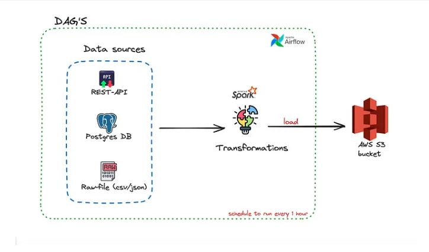

Transform Data
Project Details
- Category : Pyspark
1. Data Sources:
---REST API Data is fetched from a REST API endpoint.
---Postgres DB Structured data is extracted from a PostgreSQL database.
---Raw Files (CSV/JSON) Data is read from local or cloud-based raw files in CSV or JSON format.
2. Orchestration with Apache Airflow:
---Airflow DAGs The pipeline is scheduled and automated using Airflow Directed Acyclic Graphs (DAGs).
---Triggering Schedule The pipeline runs every **1 hour** as per the defined schedule.
3. Transformations (with Apache Spark):
---Data Cleaning and Transformation Apache Spark processes the extracted data for:
- Cleaning: Removing duplicates, handling null values, and formatting.
- Transformation: Aggregations, joins, and calculations as required.
---Scalability Spark handles large-scale data efficiently.
4. Load to AWS S3 Bucket:
---Data Storage The transformed data is loaded into an **AWS S3 bucket** for:
- Long-term storage.
- Further analytics or reporting.
---Format Data could be stored in formats like Parquet, ORC, or JSON for optimized querying and storage.
Implementation Steps:
1. **Airflow DAG Definition
- Set up tasks for data extraction (API calls, database queries, file reads).
- Define dependencies for transformation and loading tasks.
- Schedule the DAG to run every hour.
2. **Data Extraction
- Use APIs or connectors (like `psycopg2` for Postgres or file readers for CSV/JSON) to fetch data.
3. **Transformations in Spark
- Write Spark jobs to perform necessary data processing.
- Run Spark jobs on a cluster or locally, triggered by Airflow.
4. **Data Load
- Use AWS SDKs or Spark’s S3 integration to load the transformed data into the S3 bucket.
5. **Monitoring
- Monitor the pipeline in Airflow’s UI for failures or bottlenecks.
---
This pipeline ensures **automation**, **scalability**, and **efficiency** for data processing and storage.
- 